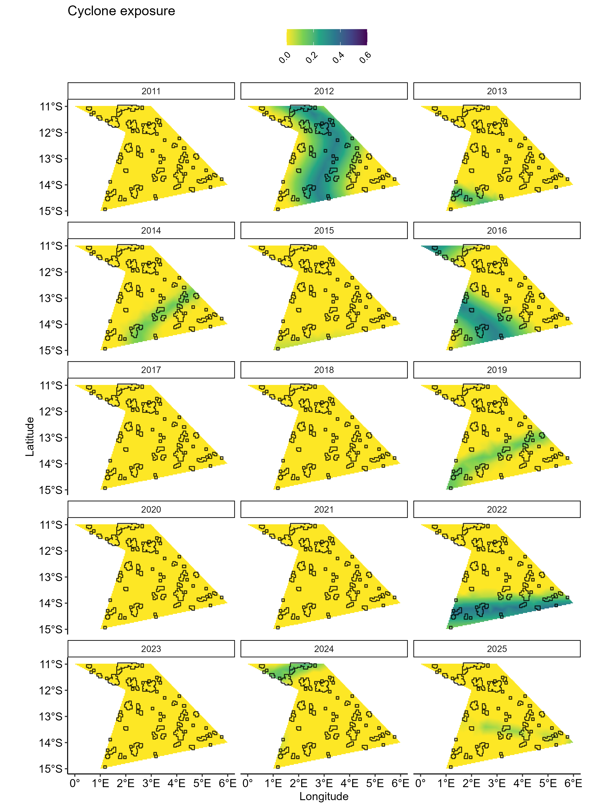
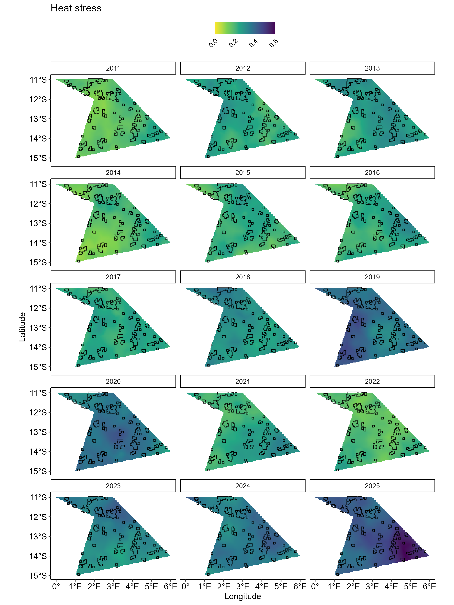
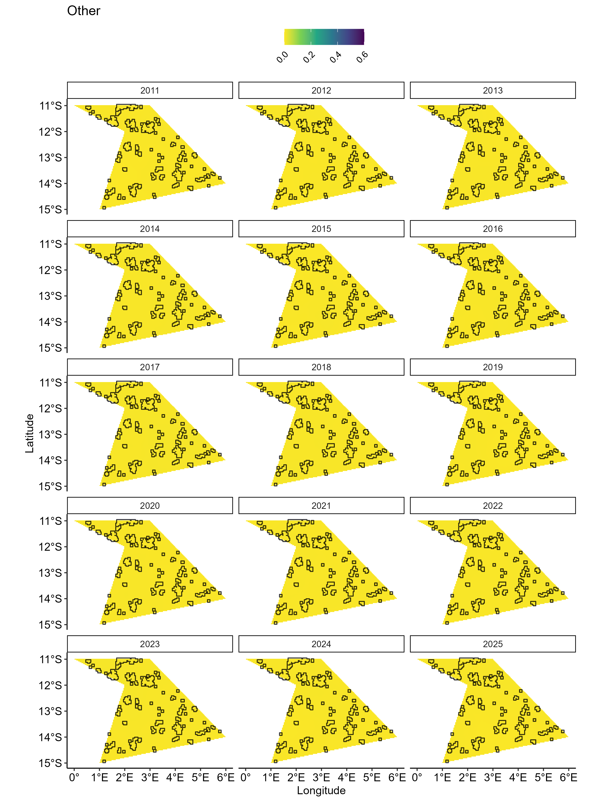

Generate disturbances
generate_disturbances.Rmd1. Generate settings
surveys <- "random" # or "fixed"
data_type <- "points" # or "cover"
synthos::generateSettings(nreefs = 25, nsites = 3, nyears = 15)1. Generate disturbances
spde <- synthos:::create_spde(spatial_grid, config_sp)
######### DHW
dhw.pts.effects.df <- synthos:::disturbance_dhw(spatial_grid, spde, config_sp)$dhw_pts_effects_df %>%
mutate(Dist = "DHW") %>%
mutate(weight = config_sp$dhw_weight)
######### CYC
cyc.pts.effects <- synthos:::disturbance_cyc(spatial_grid, spde, config_sp)$cyc_pts_effects%>%
mutate(Dist = "CYC") %>%
mutate(weight = config_sp$cyc_weight)
########## OT
other.pts.effects <- synthos:::disturbance_other(spatial_grid, spde, config_sp)$other_pts_effects%>%
mutate(Dist = "OT") %>%
mutate(weight = config_sp$other_weight)
########## All
all.pts.effects <- bind_rows(dhw.pts.effects.df, cyc.pts.effects, other.pts.effects) %>%
mutate(Value_weighted = Value * weight) %>%
arrange(Dist) %>%
mutate(Dist_plot = case_when(Dist == "DHW" ~ "Heat stress",
Dist == "CYC" ~ "Cyclone exposure",
Dist == "OT" ~ "Other")) %>%
dplyr::mutate(Year = as.numeric(format(Sys.Date(), "%Y")) - max(config_fine$years) + Year)2. Vizualisation
effects_by_dist <- all.pts.effects %>%
group_split(Dist)
dist_levels <- all.pts.effects %>% distinct(Dist_plot) %>% pull(Dist_plot)
plots_by_dist <- map2(
effects_by_dist,
dist_levels,
~ ggplot() +
geom_tile(data = .x, aes(x = Longitude, y = Latitude, fill = Value_weighted)) +
geom_sf(data = reefs.sf$simulated_reefs_sf, fill = NA, color = "black") +
facet_wrap(~Year, ncol = 3) +
scale_fill_viridis_c(
name = "",
option = "viridis",
direction = -1,
na.value = "grey90",
limits = c(0, 0.6),
breaks = seq(0, 0.6, by = 0.2),
labels = scales::number_format(accuracy = 0.1)
) +
coord_sf(crs = 4326) +
ggtitle(.y) +
xlab("Longitude") +
ylab("Latitude") +
theme_pubr() +
theme(
legend.position = "top",
legend.justification = c(0.5, 1),
legend.direction = "horizontal",
legend.text = element_text(angle = 45, hjust = 1),
strip.background = element_rect(fill = 'white')
)
)

